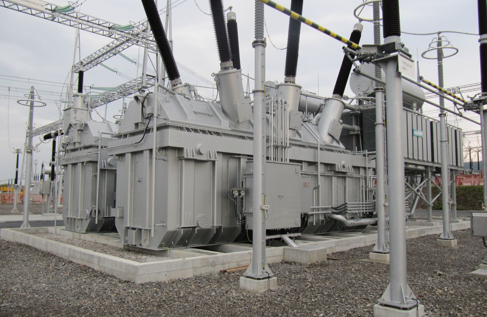
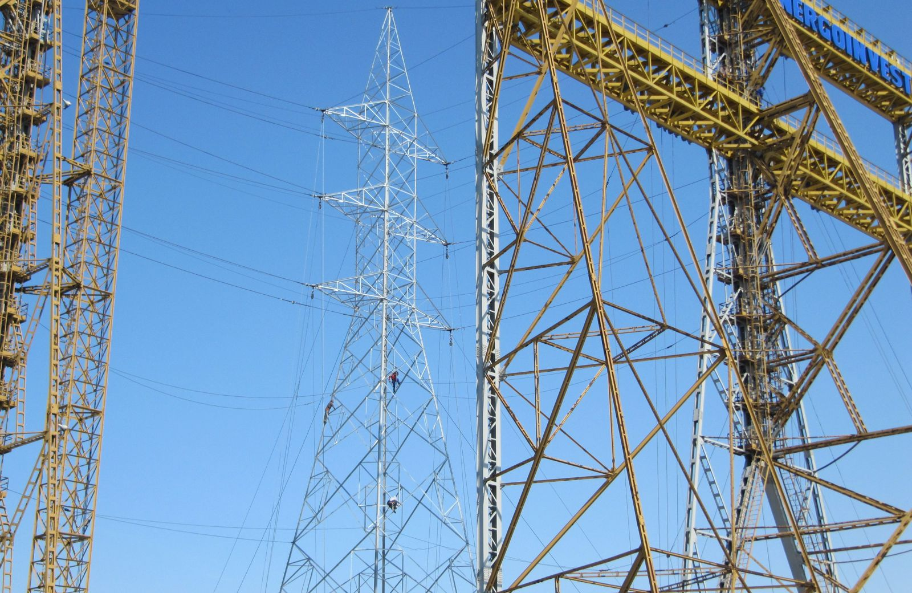
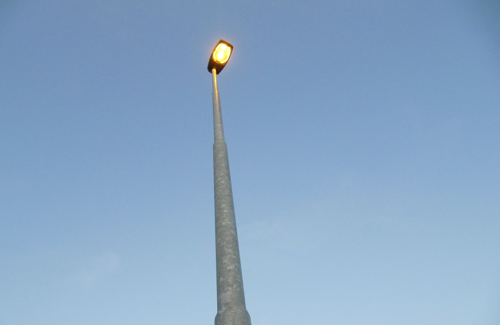
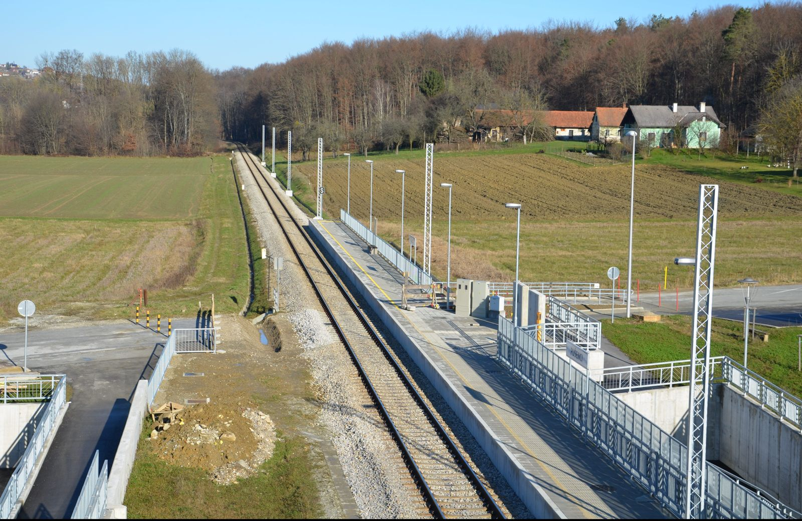
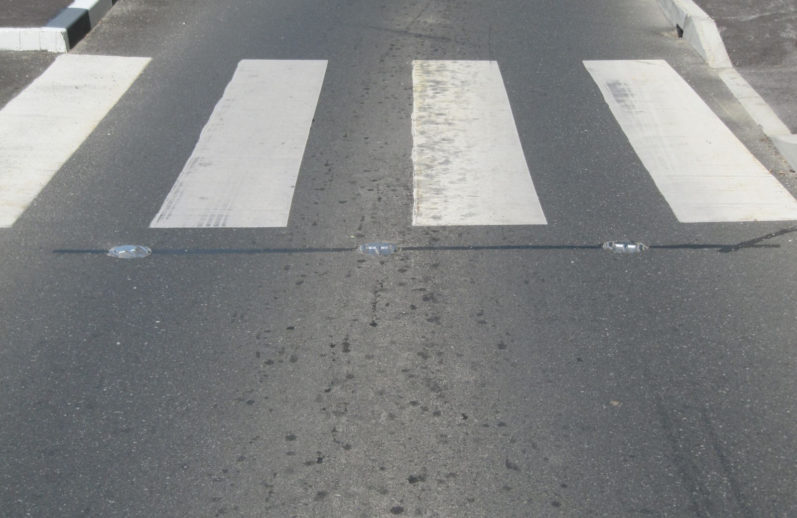
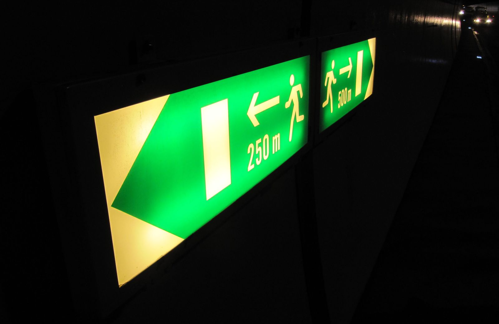
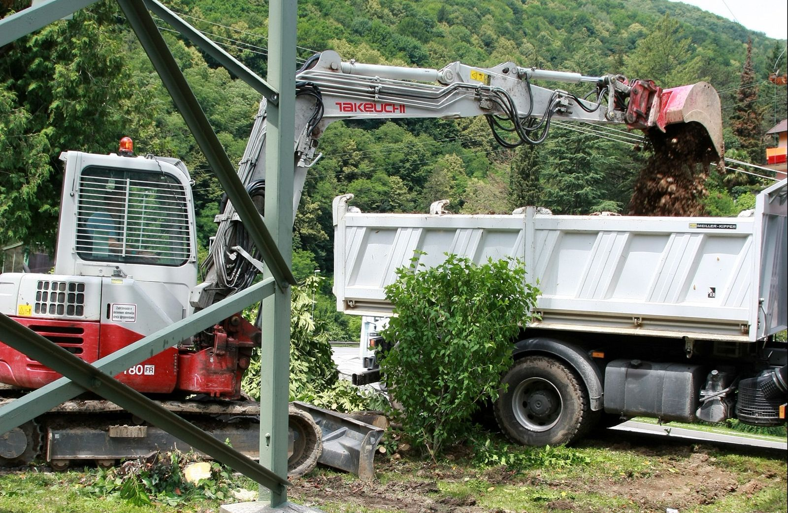
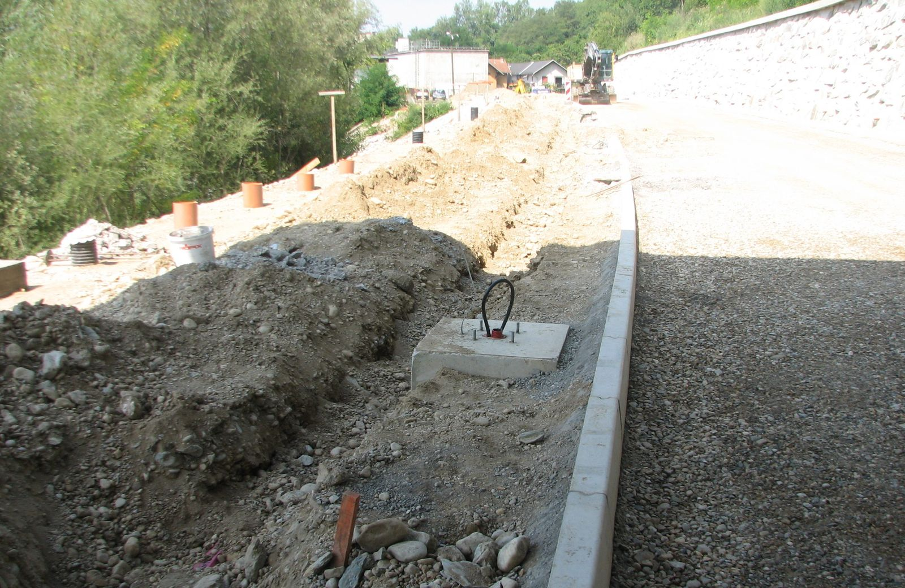

Storitve
Elektroenergetski objekti, javna razsvetljava, cestni in železniški promet ter gradbena dela.
Daljnovodi in transformatorske postaje
Gradnja, upravljanje in vzdrževanje elektroenergetskih objektov – kablovodov, daljnovodov in transformatorskih postaj od 1 kV do 400 kV.
Naše storitve zajemajo:
- Proizvodnja jeklenih konstrukcij
- Montaža jeklenih konstrukcij
- Montaža vodnikov
- Montaža opreme daljnovodov in transformatorskih postaj
- Spremljajoča gradbena dela



Javna razsvetljava in semaforizacija
Gradnja, upravljanje in vzdrževanje javne razsvetljave in semaforizacije.
Naše storitve zajemajo:
- Proizvodnja jeklenih konstrukcij
- Montaža jeklenih konstrukcij
- Montaža vodnikov
- Montaža opreme javne razsvetljave
- Spremljajoča gradbena dela


Cestni in železniški promet
Montaža, upravljanje in vzdrževanje konstrukcij ter opreme v cestnem in železniškem prometu.
Naše storitve zajemajo:
- Proizvodnja jeklenih konstrukcij
- Montaža jeklenih konstrukcij
- Montaža opreme za cestni in železniški promet
- Spremljajoča gradbena dela



Gradbena in zemeljska dela
Splošna gradbena in zemeljska dela.



Imate povpraševanje?
Pokličite nas ali nam pišite – odgovorili vam bomo.